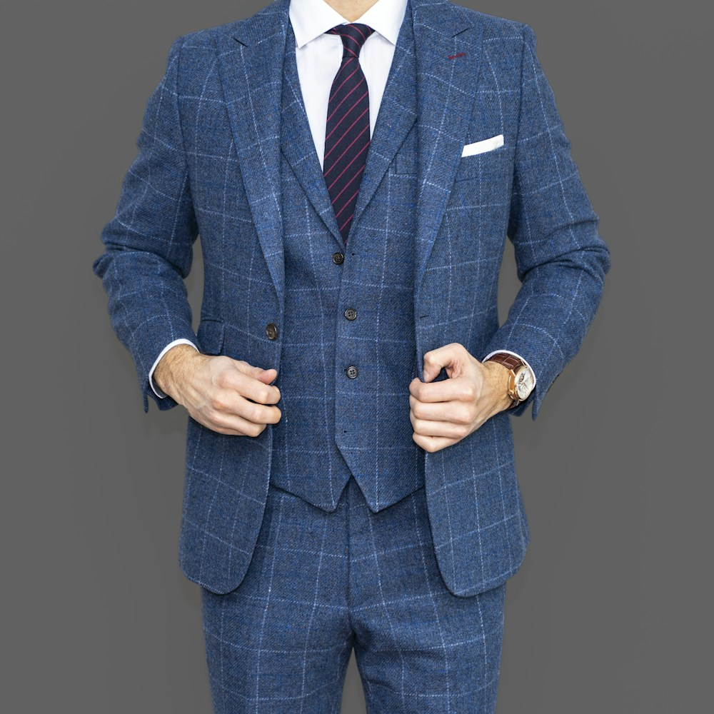
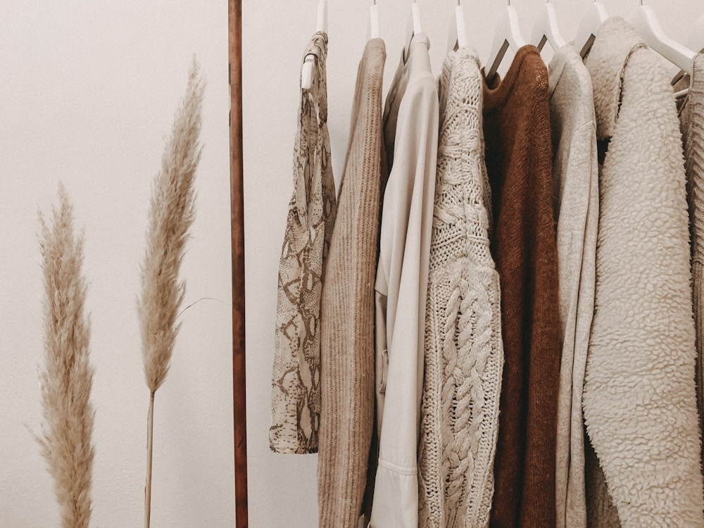

Textile Physics
Textile Physics1,245 Words • 9 Min Read
The Physics of 22-Momme Mulberry Silk & Liquid Drape Fluidity
Momme density calculations, triangular prism light refraction, and long-filament tensile strength.
Read Full Masterclass →
Couture Tailoring1,235 Words • 9 Min Read
Hand-Rolled French Seams & Haute Couture Silk Robe Tailoring
Enclosed seam junctions, bias grainline cutting, micro-piped shawl collars, and second-skin comfort.
Read Full Masterclass →Protein Dermatology
1,240 Words • 9 Min Read
The Thermoregulating Protein Structure of Pure Sericin Silk Fibers
Fibroin amino acids, natural skin hydration retention, breathability, and overnight thermal equilibrium.
Read Full Masterclass →
Botanical Color1,230 Words • 9 Min Read
Botanical Dyeing Techniques for Pure Silk Satin & Jacquard Weaves
Madder root, logwood, and rose petal infusions, alum mordanting, and lightfastness preservation.
Read Full Masterclass → Textile Conservation
Textile Conservation1,235 Words • 9 Min Read
Caring for Heirloom Silk Loungewear: Washing, Steaming & Archiving
pH-neutral detergent protocols, low-temperature vertical steaming, and breathable muslin storage.
Read Full Masterclass → Loungewear History
Loungewear History1,245 Words • 9 Min Read
A Cultural History of Luxury Dressing Gowns: Edo Kimonos to Modern Robes
From Japanese Kosode silks and Victorian banyan robes to Hollywood Golden Age boudoir glamour.
Read Full Masterclass →